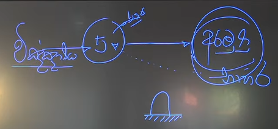
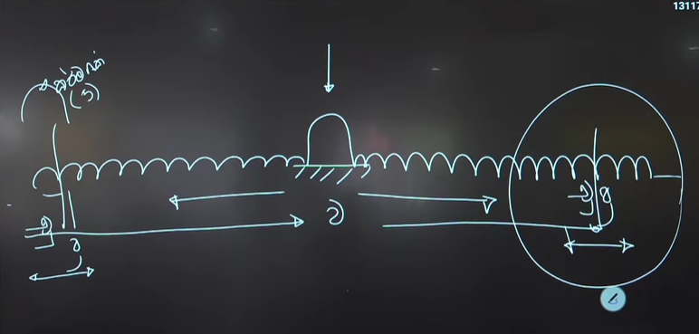
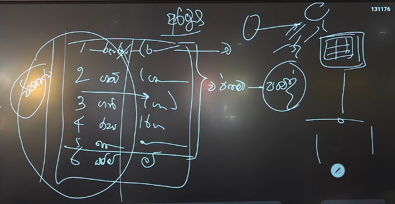
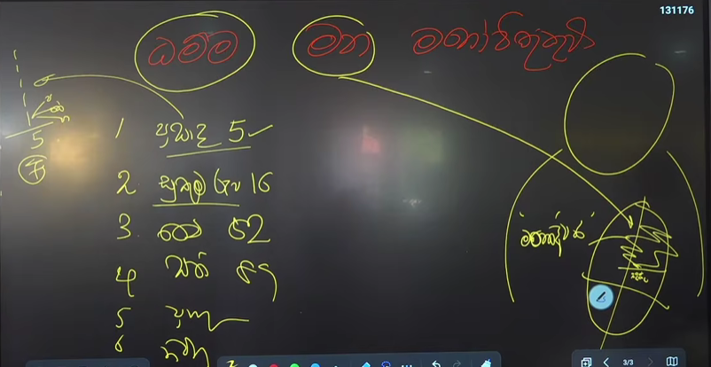

නමෝ තස්ස භගවතො අරහතො සම්මා සම්බුද්ධස්ස ... !!!
සම්මුතියේදී ඉපදීමේ සිට මරණය දක්වා වන ජරා මරණ වීම අප කාටත් පොදු දෙයකි. නමුත් දරුවෙක් කුඩා කාලයේ සිට වැඩිවියට පත්වීම දක්වා එහි ප්රකටත්වයක් ඇතත් එය සත්වයාට සාමාන්ය දෙයකි. ඉන් පසුව මැදි වයසට පැමිණෙන විට ජරා වීම ප්රකට වීමට ගනී. නමුත් එයත් සම්මුතියේ පිහිටා එසේ වයසට යන විට සිදුවන දේවල් ලෙසින් ගැනීම සාමාන්ය සත්ව ස්වභාවය වේ. නමුත් සත්ය වශයෙන් ජරාව සම්මුති උත්පත්තියේ සිටම සිදුවන දෙයකි. එයට සම්මුති සත්වයා එතරම් අවධානය නොදුන්නත් ඒ ඒ වයසේදී වන්නාවූ විපරිත භාවයන් සාමාන්ය ස්වභාවයන් සේ සලකා සිටිති. එලෙස ඉපදීම, වැඩීම, ජරාව, මරණය යන්නාවූ අංග ලෙස සාමාන්ය ජීවිතය ලෙස ගැනුනත් ඒ සමගම සසරේ යාම, දුක සකස් කරගැනීම යන්නාවූ ධර්මතා නොදැනුවත්වම සිදුවන්නාවූ ක්රියාවකි. එසේ භවය සඳහා කර්ම සකස් වුවත් ඒ බව නොදන්නා කමින් අනාත්මීයව සකස් වන්නාවූ පෙනීම, ඇසීම, දැනීම, දැනගැනීම (හිතිම) (දිට්ඨ, සුත, මුත, විඤ්ඤාත) යන්නාවූ මුල් උපත්තිත් නැවත මනෝ මූලිකව සකස් කරගනිමින් කුසලාකුසල වශයෙන් කාය, වචී, මනෝ කර්ම සිදු කරමින් සසර/දුක සකස් කරගැනීම සාමාන්ය සත්ව ස්වභාවය වේ.
පෙනීම, ඇසීම, දැනීම, දැනගැනීම (හිතිම) (දිට්ඨ, සුත, මුත, විඤ්ඤාත) ලෙසින් අනාත්මීයව සකස් වන්නාවූ ස්කන්ධ පංචකය සකස් වීම ධර්මතා සමූහයකගේ ඵලයක් ලෙස සකස් වන බව පිළිබදව ඇත්තාවූ නොදැනුවත් කම නිසා එසේ පෙනෙන දේවල්, ඇසෙන දේවල්, දැනෙන දේවල්, දැනගන්නා දේවල් අතීතානාගත වර්තමාන වශයෙන් මනෝමූලිකව ගලපා (විපල්ලාසය/මඤ්ඤනාව) ගනිමින් එසේ පෙනෙන දේවල්, ඇසෙන දේවල් ආදී අරමුණු වලට සම්මුති අර්ථයන් දී භාහිර ඇතැයි සිතා කාලාත්රයේම සම්මුතිය ඇසුරු කිරීම සත්ව ස්වභාවය වේ. එලෙස මූලිකව සකස් වන්නාවූ ස්කන්ධ පංචකයන්ට නැවත සිතමින් වර්තමාන මොහොතට අත්දැකීම් වශයෙන් සත්වයා සකස් කරගනු ලබන්නේ කාය, වචී, මනෝ කර්ම වේ. එලෙසින් සකස් වන්නාවූ අත්දැකීම් කෙසේ සකස් වනවාදැයි විමසා බැලිය යුතු කරුණක් වේ. එනම් මෙහි ක්රියාකාරිත්වයයි එනම් පෙනීම, ඇසීම, දැනීම, දැනගැනීම (හිතිම) (දිට්ඨ, සුත, මුත, විඤ්ඤාත) ගැන යම් අදහසක් ගැනීමට කාලයක් ගතවීම යන කරුණ මෙහිදී සලකා බැලිය යුතු වේ. සම්මුති වශයෙන් සත්වයාට එසේ කාලයක් ගතවීම පිළිබදව අවබෝධයක් සකස් නොවන්නේ සිත් අරමුණු දැනගන්නාවූ වේගයේ පවතින්නාවූ ස්වභාවය නිසාය. එලෙසින් කාය, වචී, මනෝ කර්ම ක්ෂණයෙන් ඇතිවන්නාවූ දේවල් නොවන අතර මුල් උපත සකස් වී යම් කාලයක් ගත වූ පසු කෘත්යන් සිදුවේ යන්න දැනගත යුතුවේ. එනම් මුල් අරමුණ වෙනුවෙන් කාය, වචී, මනෝ කර්ම සකස් වන බවවේ.

මෙලෙස ස්කන්ධ පංචකයන්ගේ සකස් වීමට හා ඒ අරභයා කාය, වචී, මනෝ කර්ම සකස් වීමට නම් යම් අරමුණක් මූලික වීම සිදුවිය යුතුවේ. මෙහිදී තේරුම් ගත යුතු කරුණක් නම් අරමුණ යනු වෙනම ධර්මතාවයක් වන අතර එලෙස ස්කන්ධ පංචකය සකස් වීමට යෙදෙන්නාවූ නාම (චෛතසික) යනු එකිනෙකට වෙනස් ධර්මතා ලෙස පවතින බවය. එනම් සිත, අරමුණ, ඒ හා යෙදෙන නාම (චෛතසික) ධර්මතා අරමුණ සකස් කිරීමේදී එකට යෙදුනත් (තින්නන් සංගති) ඒ ඒ ධර්මතා එකිනෙකට වෙන්ව පවතින්නාවූ ධර්මතාවයන්වේ. සම්මුති වශයෙන් අරමුණු භාහිර ධර්මතාවයන් ලෙස පවතින අතර ස්කන්ධ පංචකය යනු අජ්ජතික ධරමතාවයක් වේ. එය විඤ්ඤාණ මූලික ක්රියාවකි එනම් ඒ ඒ ආයතනයන්ට අරමුණු යෙදුනු අවස්ථාවන්වලදී විඤ්ඤාණයෙන් දැනගැනීමෙන් පසුව අරමුණ ගැන විස්තර කිරීම් සකස් වීම සිදුවේ. එනම් අරමුණ ගැන යම් විස්තරයක් සකස් වීමට නම් එම අරමුණ හේතු වී සකස් වන්නාවූ රූප, වේදනා, සංඥා, සංස්කාර එක වරකට එක බැගින් විඤ්ඤාණයෙන් දැනගත යුතුවේ. එලෙසින් අරමුණ සකස් වී ඇත්තේ ස්කන්ධ පංචකයක් ලෙසිනි.
අරමුණ වෙනුවෙන් ස්කන්ධ පංචකයේ සකස් වන්නාවූ ධර්මතාවය "රූපය" (රුප්පන රූපය) ලෙසින් හඳුන්වනු ලැබේ. එලෙස සකස් වන්නාවූ "රූපය" සඳහා යෙදෙන්නාවූ අනෙකුත් නාම එනම් වේදනා, සංඥා, සංස්කාර යෙදීම රූපය අරභයා වන අතර ඒ සියළු ස්කන්ධ ධර්මතා විඤ්ඤාණයෙන් දැනගැනීම සිදු කරනු ලැබේ. එනම් නාම ධර්මතා යෙදීම සිදුවනු ලබන්නේ අරමුණ වෙනුවෙන් වීම මෙහිදී දැනගත යුතු වේ. හේතු වශයෙන් යෙදෙන්නාවූ බහිද්ද අරමුණු වෙනුවෙන් යම් අදහසක් සකස් කරගැනීමට නම් ඒ ගැන සිතීම සිදු කල යුතුවේ. මෙහිදී දැනගත යුතු කරුණක් නම් විඤ්ඤාණය යනු දැනගැනීම වේ. එසේ විඤ්ඤාණයේ කෘත්ය දැනගැනීමම (විජානනය) නම් භාහිර වශයෙන් යෙදෙන්නාවූ අරමුණ වෙනුවෙන් ස්කන්ධ පංචකයන් සකස් වීමට අනොන්ය වශයෙන් යෙදෙන්නාවූ වෙනත් ධර්මතා අරමුණු සකස් වීමට විඤ්ඤාණය සමග යෙදීම සිදු විය යුතුය එලෙස යෙදෙන්නාවූ ධර්මතා ලෙස ආර්ය සත්ය දේශනාවේදී වේදනා, සංඥා, සංස්කාර (නාම/චෛතසික 52) වශයෙන් භාග්යවතුන් වහන්සේ දේශනා කරන ලදී. (කාලාත්රයේම වේදනා, සංඥා, සංස්කාර යෙදීම සිදුවන්නේ රූපය නිසාම වේ) අරමුණු සකස් කරගැනීමේදී එදිනෙදා ජීවිතයේදී එසේ සකස් වන්නාවූ අරමුණු ඇති නැති බව සිතමින් සසර සකස් කරගැනීම සිදුවේ. භාග්යවතුන් වහන්සේ දේශනා කරනුයේ එසේ අරමුණු ඇත නැත යන අර්ථයෙන් තොරව මධ්යම ප්රතිපදාවේ පිහිටීම සිදුවිය යුතු බවය. එනම් අන්ත වලින් මිදුණු බවය එසේ අන්ත වලින් මිදීම හේතු කරගෙන එහි යථාර්තය වන හේතු ඇති කල්හි ඵල සකස් වන බව නුවණින් විමසීමෙන් අවබෝධ කර ගැනීමට නියමිත වේ.
යොමුව: අචේලකාශ්යප සූත්රය https://pitaka.lk/books/patichcha-samuppada-vivaranaya/15-6-2.html

එකත්ත හා නානත්ව වශයෙන් ස්කන්ධ පංචකයන් සකස් වීම ප්රතිසන්ධියේ සිට වර්තමාන මොහොත දක්වාද ඉන් ඔබ්බට එනම් අනාගතයේදී මෙලෙසම ජීවත් වී යම් මොහොතක මේ භවයේ මරණයක් එනම් චුතියක් හා නැවත ප්රතිසන්ධියක් ඇතැයි යන කරුණු සම්මුති වශයෙන් විඤ්ඤාණයෙන් දැනගන්නාවූ කරුණු වේ. මෙලෙස සකස් වන්නාවූ ධර්මතා කර්ම ශක්තිය ප්රත්ය කරගනිමින් සිදුවන්නාවූ කෘත්යන් වන අතර එහිදී ප්රතිසන්ධිය සිදුවන්නේද පෙර චුතියට ආසන්නව කර්මය, කර්ම නිමිත්ත, ගති නිමිත්ත ලෙසින් අරමුණු උනාවූ කර්ම ශක්තිය (ස්කන්ධ පංචකය) හේතු කරගනිමින් වේ. එලෙසම එසේ ප්රත්ය වූ කර්මයට අදාලව යම් කාල සීමාවක් ජීවත් වී යලිත් මරණයට පත්වී නැවත ඉපදීමක් සිදුවීම යන්නාවූ කරුණුද සම්මුති වශයෙන් විඤ්ඤාණයෙන් දැනගන්නාවූ ධර්මතා වේ. මෙලෙස ප්රතිසන්ධිය, භවයේ යාම වශයෙන්ද ආදී සියළු කෘත්යන් (ස්කන්ධ පංචකයන්) සකස් වන්නේ යම් අරමුණකට වේ. මෙහිදී අරමුණකට ස්කන්ධ පංචකයන් සකස් වීමේදී දැනගත යුතු කරුණ නම් ඒ ඒ අරමුණු සඳහා යෙදෙන්නාවූ නාම, විඤ්ඤාණ වෙනස් වීම සිදුවන බවය.
මෙලෙසින් කාලාත්රයේම ස්කන්ධ පංචකයන් සකස් වීම සිදුවන්නේ යම් අරමුණකටය එහිදී ස්කන්ධ පංචකය සකස් වීමට ප්රධාන වශයෙන් මූලික වීම සිදු කරනු ලබන්නේ නාම ධර්මතා වලිනි එනම් තින්නන් සංගති වශයෙන් අරමුණු සකස් වීමේ කෘත්ය එස්සාදි නාම (චෛතසික) ධර්මතා ඔව්නොවුන්ගේ කෘත්යන්ගේ ස්වභාවයන් අරමුණ වෙනුවෙන් යෙදෙන්නාවූ ආකාරයන් විමසා බැලිය යුතුය. එලෙසින් සකස් වීම නිසා ස්කන්ධ පංචකයේ වේදනාදී නාම (චෛතසික) ඵල ධර්මතාවයන් වශයෙන් ගෙන ආර්ය සත්ය දේශනාවේදී භාග්යවතුන් වහන්සේ දේශනා කරන ලදී. ස්කන්ධ පංචකයේ මෙසේ නාම ධර්මතා (චෛතසික) යෙදෙන ආකාරය ඒ ඒ ධර්මතාවයන්ගේ ප්රකටත්වය මත දේශනා කරන අතර එහිදී වේදනා, සංඥා ප්රධාන වශයෙන් දේශනා කරමින් එයින් අන්ය අනෙකුත් නාම ධර්මතා (50/52) සංස්කාරස්කන්ධයේ එකට දේශනා කරන ලදී, මෙහිදී දැනගත යුතු කරුණක් නම් අරමුණ වෙනුවෙන් කාය, වචී, මනෝ කර්ම සිදු කරත් එසේ ක්රියාත්මක වීම සිදු කරනු ලබන්නේ අජ්ජත්තික නාම (චෛතසික) ධර්මතා වේ. එනම් රාග, ද්වේග, මෝහාදි, අලෝහ, අද්වේග, අමෝහ ආදී ලෙසින් අරමුණත් සමග යෙදෙන්නාවූ නාම (චෛතසික) ධර්මතායි. නාම ධර්මතා මෙසේ සිත සමග ඉපදීමෙන් සකස් වන්නාවූ වේදනාවේ ස්වභාවයන් ලෙස දෝමනස්ස, සෝමනස්ස, මධ්යස්ත (උපේක්ෂා) ලෙසින් එදිනෙදා ජීවිතයේ අරමුණ විඳීම වශයෙන් සකස් වීම සිදුවේ. වේදනාවේ තිබෙන්නාවූ ඉෂ්ට, අනිෂ්ට ස්වභාවය අනුව විඤ්ඤාණයෙ ස්වභාවය වෙනස් වේ. එසේ විඤ්ඤාණයෙ වෙනස් වන්නාවූ ස්වභාවයන්ට අනුව සත්වයාගේ කාය, වචී, මනෝ කර්ම සකස් වීමද ඒ ඒ නාම ධර්මතා අනුව යෙදීම සිදුවන බව අවබෝධ කරගත යුතුය.
නාම ධර්මතා යනු කෘත්යන් හා ශක්තීන් ලෙස පවත්නා වූ ධර්මතා වේ. ආර්ය සත්ය දේශනාවේදී භාග්යවතුන් වහන්සේ සම්මුති සත්ය හා පරමාර්ථ වශයෙන් ඇත්තාවූ ධර්මතා කොටස් දෙකක් දේශනා කරන ලදී. එහිදී සම්මුතිය නම් පරමාර්ථය ධර්මතා අවකාශයේ පිහිටා තිබෙන ආකාරයන් ලෙස එනම් සත්වයා එදිනෙදා සිතින් ගන්නා මල, ගස, ළමයා, මේසය, අම්මා ආදී සවිඥානික හා අවිඥානික වශයෙන් සිතට දැනෙන, සිතින් ගන්නා ඒ ඒ ස්වාභාවයන් ලෙස දේශනා කල අතර සත්ය වශයෙන් පවතින්නාවූ ධර්මතා ලෙස රූප(28), නාම 52 (චෛතසික), විඤ්ඤාණය (1/89), නිර්වාණය යනුවෙන් ඇත්තාවූ පරමාර්ථ ධර්මතා 82 ක් දේශනා කරන ලදී. පරමාර්ථය ඒ ඒ ස්වභාවයන් (ලක්ෂණයන්) අනුව සම්මුතිය විමසීමෙන් අවබෝධ කරගත යුතු ධර්මතා වන අතර සත්වයා එසේ නොවිමසා පරමාර්ථයේ සම්මුති ස්වභාවය ඇතැයි සිතා දුක/ලෝකය සකස් කරගනිමින් සසරේ යාම සාමාන්ය ස්වභාවය වේ.
ධර්මතා 18 අනුව ස්කන්ධ පංචකය මුල් හා දෙවන උපත වශයෙන් නුවණින් විමසීමේදී ස්කන්ධ පංචකය සකස් වීම හේතු යෙදී කෙසේ අරමුණ අනුව වෙනස් වන්නේදැයි දැනගත යුතුවේ. අතීතානාගත වර්තමාන වශයෙන් ස්කන්ධ පංචකයන් අරමුණක් මූලික වෙමින් සකස් වීමේදී එකම අරමුණ දීර්ඝ කාලයක පැවත්මක් ඇත්තේ නැත. සකස් වූ ස්කන්ධ පංචකය ක්ෂණික නිරුද්ධ වීමකින් පසුව නව අරමුණක් සකස් වීම සිදුවන බව තේරුම් ගන්නා ලද කරුණක් වේ. එහිදී තේරුම් ගත යුතු කරුණ නම් නිරන්තරයෙන් විඤ්ඤාණයෙන් දැනගන්නාවූ අරමුණ වෙනස් වන අතර එසේ අරමුණු වෙනස් වීම වශයෙන් ඒ ඒ අරමුණ සමග යෙදෙන්නාවූ නාම (චෛතසික) ධර්මතාද අරමුණ අනුව වෙනස් වේ. සිතත් සමග නාම ධර්මතා ඉපදීමේදී
- එකුප්පාද - එකම අවස්ථාවකදී ඉපදීම
- එකනිරෝධ - එකම අවස්ථාවක නැතිවීම
- ඒකාලම්බන - එකම අරමුණක් ගැනීම
- එකවත්ථුක - සිත සකස් වන වස්තුවම ඇසුරු කරමින් ඉපදීම
යන්නාවූ සතර සම්ප්රයෝග ලක්ෂණ හතරකින් යුක්තව උපදී. අරමුණක් වෙනුවෙන් මුලින්ම සිදුවන ක්රියාව නම් තින්නන් සංගතිය වේ. ඉන්පසු එසේ මුල් උපතෙන් සකස් වූ ස්කන්ධ පංචකය වෙනුවෙන් නැවත නැවතත් සිත් සකස් වීම සිදුවේ. එලෙසින් යම් අරමුණකට කාය, වචී, මනෝ කර්ම කිරීමටනම් මුලින් සකස් වූ ස්කන්ධ පංචකය නැවත නැවත නිබ්බන්ති, අභිනිබ්බන්ති වශයෙන් වැඩීම සිදු විය යුතුය. එනම් යම් අරමුණක් වෙනුවෙන් සිත් පෙළක් සකස් වීම සිදු විය යුතුය. මෙහිදී දැනගත යුතු කරුණ නම් අතීතානාගත වශයෙන් අරමුණු විඤ්ඤාණයෙන් දැනගත හැකි වුවත් හුදෙක් ඒවා විද්යාමාන නොවන ධර්මතා ලෙස පවතී නමුත් වර්තමාන මොහොත සත්වයාට විද්යාමාන මොහොත ලෙස ප්රකටත්වයෙන් යුක්ත වන අතර දුක සකස් වන්නේ කෙසේද යන්න විමසීමේදී එසේ නුවණින් විමසීමට (ධර්මතා 18) යෝග්යතම අවස්ථාව නම් ප්රකට මොහොත වන බවය. එලෙසින් ඒ ඒ අවස්ථාවේදී අරමුණ වෙනුවෙන් සකස් වන්නේ කිනම් ධර්මතාවයක්ද යන්න බව දැකිය යුතුය. එනම් ප්රකට අරමුණක් වෙනුවෙන් සිත් පෙළක් (චිත්ත වීථි) පහල වීම කෙසේ සකස් වූවාද යන්න නුවණින් විමසීම සිදු කල යුතුය. (සතර සතිපට්ඨානය)

බහිද්ද වශයෙන් ස්කන්ධ පංචකයන් සකස් වීමට යෙදෙන්නාවූ අරමුණු ආකාර හයකි, එනම්
- වර්ණ (රූප) - රූපාරම්මණ -චක්ඛු
- ශබ්ධ - ශබ්ධාරම්මණ - සෝත
- ගන්ධ - ගන්ධාරම්මණ - ඝාණ
- රස - රසාරම්මණ - ජිව්හා
- පොට්ඨබ්බය - පොට්ඨාබ්බාරම්මණ - කාය
- ධම්ම - ධම්මාරම්මනයණ - මන
ලෙසින් වේ. එයින් රූපාරම්මණ, ශබ්ධාරම්මණ, ගන්ධාරම්මණ, රසාරම්මණ, පොට්ඨාබ්බාරම්මණ යනු වර්තමාන වශයෙන් ස්කන්ධ පංචකයන් සකස් වීමට යෙදෙන්නාවූ අරමුණු වේ. එනම් ඒ ඒ ආයතන (පන්වත්ද්වාර) සමග වර්තමානයේ යෙදෙන්නාවූ අරමුණු වේ (ද්විපංච විඤ්ඤාණ-අහේතුක කුසලාකුසල සිත්). අරමුණු මෙසේ හේතු ලෙස යෙදීම විපාක වාරයක් ලෙස හඳුනා ගත යුතු බව භාග්යවතුන් වහන්සේ දේශනා කරන ලදී. එනම්අරමුණු යනු යම් කර්ම ශක්තියක විපාකයෙකි එසේ සකස් වන්නාවූ විපාක කර්මජ කයට විඳීම වශයෙන් එනම් සුඛ, දුක්ඛ, උපේක්ෂා වශයෙන් වේදනා බෙදෙයන් අරමුණු සකස් වීමට නම් හේතුව වශයෙන් යෙදෙන්නාවූ අරමුණුද විපාක වශයෙන් යෙදිය යුතුවේ. එනම් අතීත කුසලාකුසල කර්මයන් මත සකස් වන්නාවූ විපාක වශයෙන් වේ. එසේ විපාකයක් ලෙසින් යෙදෙන්නාවූ අරමුණට වර්තමානයේ තණ්හාව යෙදීමෙන් නව කර්ම සකස් වීම සිදුවේ.

පන්වත්ද්වාර අරමුණු සකස් නොවන අවස්ථාවන් වලදී අරමුණු ගැනීම සිදුවනුයේ මනොද්වාරය (මන) මගිනි. භවාංගය වෙනත් අරමුණකට නොයෙදෙන්නාවූ සෑම අවස්ථාවකම හදය වස්තු රූපය ඇසුරු කරමින් සිටි එලෙසින් එය මනොද්වාරය ලෙස හඳුන්වනු ලැබේ. අරමුණු ලෙස ධම්මාරම්මණ යෙදෙනුයේ මනොද්වාරය (මන) සමගිනි. එක් භවයක සත්වයකුගේ ප්රතිසන්ධි, භවාංග, චුති යන විඤ්ඤාණ තුනම එකක් වන අතර එලෙසින් මූල විඤ්ඤාණය අරමුණු ගැනීම සිදු කරනුයේ ප්රතිසන්ධිය සකස් වීමට යෙදුනාවූ කර්ම ශක්තියේ ඇත්තාවූ ප්රබලත්වය මතවේ එනම් කර්ම ශක්තිය ඉක්මවා සත්වයාට අරමුණු සකස් ගැනීමේ හැකියාවක් නැත. ධම්මාරම්මණ ලෙසින් යෙදෙන්නාවූ අරමුණු අතිශය සියුම් ධර්මතා වේ. එලෙසින් පවත්නා අරමුණු නම්
- ප්රසාද රූප 5 (චක්ඛු, සෝත, ඝාණ, ජිව්හා, කාය)
- සුකුම රූප 16 (රූප 28 න් ප්රසාද රූප 5 හා ගෝචර රූප 7 න් අන්ය රූප)
- චෛතසික 52
- සිත් 89
- ප්රඥප්ති
- නිර්වාණය ලෙසින් පවත්නා ධර්මතා ධම්මාරම්මණ වශයෙන් යෙදේ.
දේශනාවේ YouTube සබැඳියාව: https://www.youtube.com/watch?v=pC71E8xmu3Q